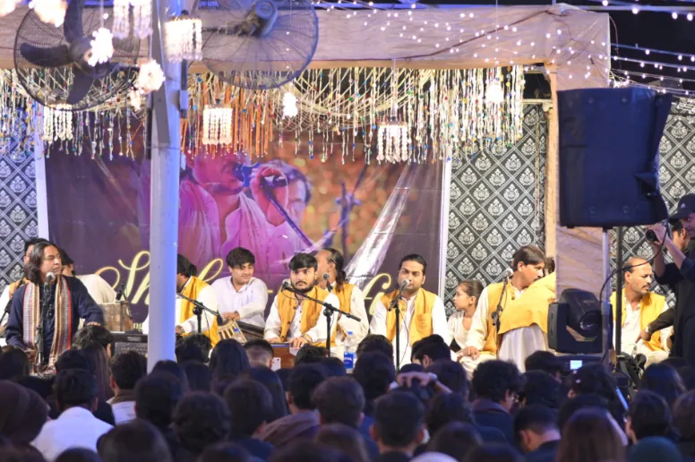

Life beyond the classroom.
Sports and arts, leadership and community service — a rich array of co-curriculars designed to complement the curriculum and build creativity, teamwork and personal growth.

Cave. Congo. Cape.
Students are divided into three houses — built to inspire teamwork, leadership and friendly competition through sports, academics and extracurricular challenges.
Lead. Represent. Inspire.
Leadership isn’t a title — it’s a mission. Led by the Head Boy and Head Girl with their deputies and House Captains, the council is elected through a transparent, fair vote and leads event volunteering and discipline.
The Credo Student Enrichment Program.
Learning beyond the classroom — societies, co-curriculars and community service that nurture personal growth.
Societies that build confidence and friendships
Clubs for little explorers
In-house and external events; Taekwondo for the young ones.
A calendar full of firsts.
Moments at Credo.
Student writing.
Essays and poems by Credo College students, published on the College’s website.